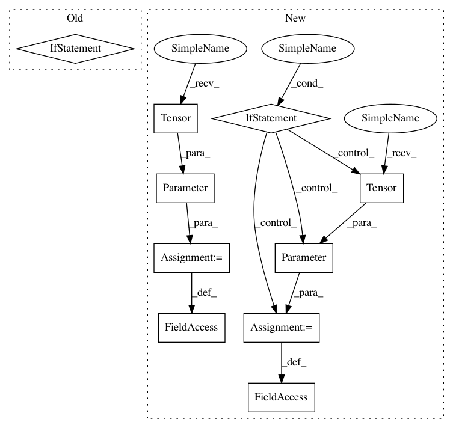

1c0ab72b12d58cb32812007b1c8870fc04c6dc96,torch_geometric/nn/conv/hypergraph_conv.py,HypergraphConv,__init__,#HypergraphConv#Any#Any#Any#Any#Any#Any#Any#Any#,38
Before Change
self.alpha_initialized = False
self.negative_slope = negative_slope
self.dropout = dropout
self.aggregate_method = "cat" if concat else "avg"
self.attrs = nn.Parameter(torch.Tensor(1, heads, 2 * out_channels))
def norm(self,
hyper_edge_index,
After Change
else:
self.heads = 1
self.concat = True
self.weight = Parameter(torch.Tensor(in_channels, out_channels))
if bias:
self.bias = Parameter(torch.Tensor(self.heads * out_channels))
else:
self.register_parameter("bias", None)
self.reset_parameters()
def reset_parameters(self):
glorot(self.weight)
In pattern: SUPERPATTERN
Frequency: 3
Non-data size: 10
Instances
Project Name: rusty1s/pytorch_geometric
Commit Name: 1c0ab72b12d58cb32812007b1c8870fc04c6dc96
Time: 2019-05-07
Author: matthias.fey@tu-dortmund.de
File Name: torch_geometric/nn/conv/hypergraph_conv.py
Class Name: HypergraphConv
Method Name: __init__
Project Name: PacktPublishing/Deep-Reinforcement-Learning-Hands-On
Commit Name: a2d4c181f1aa7e49dd5e6bc02bde9a5048be6b54
Time: 2017-10-28
Author: max.lapan@gmail.com
File Name: ch07/lib/dqn_model.py
Class Name: DQN
Method Name: __init__
Project Name: rusty1s/pytorch_geometric
Commit Name: 1c0ab72b12d58cb32812007b1c8870fc04c6dc96
Time: 2019-05-07
Author: matthias.fey@tu-dortmund.de
File Name: torch_geometric/nn/conv/hypergraph_conv.py
Class Name: HypergraphConv
Method Name: __init__
Project Name: dmlc/dgl
Commit Name: 650f6ee1e0b3c2888a2c6d7db9c3d159cae5a583
Time: 2019-08-27
Author: expye@outlook.com
File Name: examples/pytorch/appnp/appnp.py
Class Name: GraphPropagation
Method Name: __init__